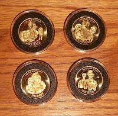

Coin Cases
5/31/2012
{kind=link}

I now have in stock Air-Tite brand coin holders for your Hall of Fame Coins. Air Tite Coin Holders (right) are used by coin collectors, dealers and even mints. Air Tite gives you a quality individual holder that guards against air contamination for your coins. The holders and rings are free of PVC for safer coin storage. The cover and base are made of clear acrylic plastic and snap together easily (coin is visible from both sides). The ring secures the coin in the holder, preventing movement, and the black color adds an eye-catching accent to the coin’s presentation. Only $5.00 for a set of four 34mm holders (without coins).{kind=link}
For my personal Hall of Fame coin collection, I plan to use a Dansco Coin Binder. Dansco has manufactured fine quality coin albums and binders for serious coin collectors since 1937. They are built for both professional and novice coin collectors who want the best for their collection. Dansco uses the finest materials and craftsmanship in the constructions of its coin albums including acetate covered coin ports to protect both sides of the display. The simulated leather binder includes a two post design for easy page additions. Blank extra pages allow you to modify and upgrade your album as you see fit.
Loose-leaf hinged pages (as pictured here) are plastic coated and washable. Ports sized to hold Hall of Fame Coins securely and covered with acetate slides to protect both sides of coin. Coins are visible from both sides of the page. This is a display Binder you will be proud to own. $30.00 for complete Dansco Binder Set: Album Binder with two pages (each page will hold twelve 34mm Hall of Fame Coins) and Binder Slipcover (below). (Additional pages available.)
Mr. D's Blog Special: Purchase one Dansco Binder Set ($30.00) along with one 2012-B (Set Two) Hall of Fame Coins ($30.00) and I will include one 2012-A (Set One) Hall of Fame Coins FREE! (Plus $5.00 shipping per order.) mahertalk@aol.com
{kind=link}